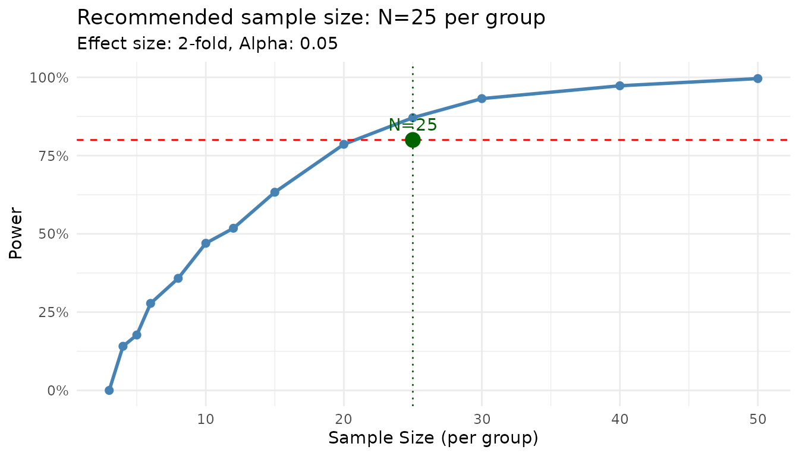
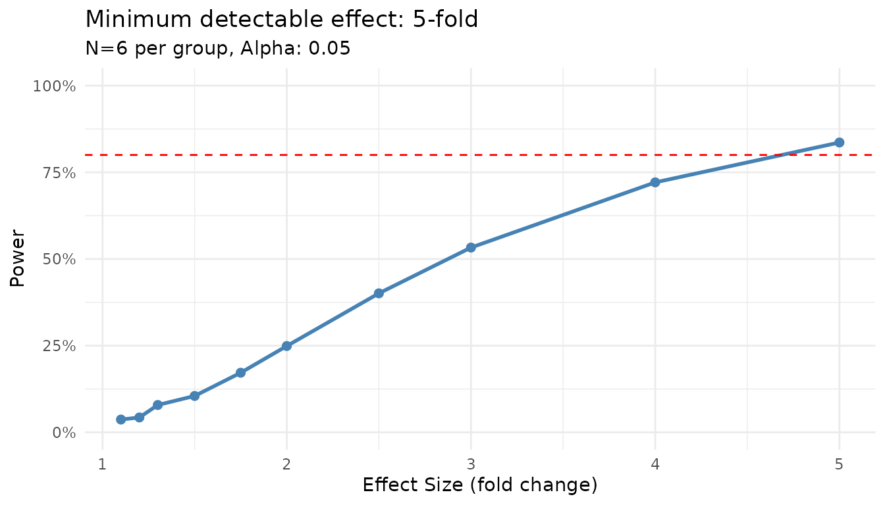
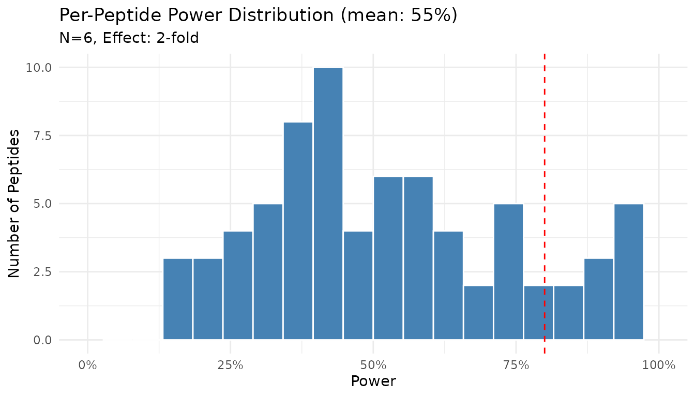
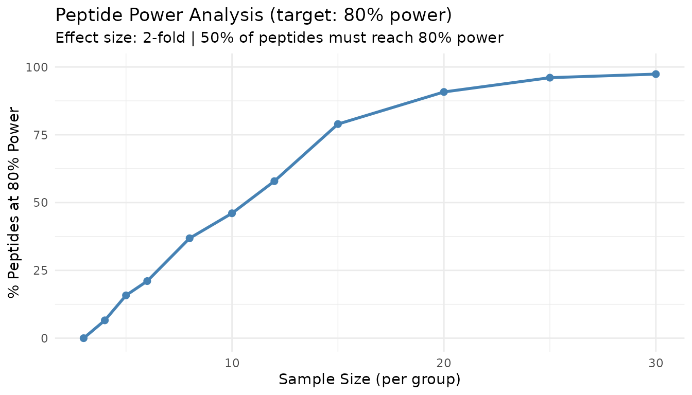
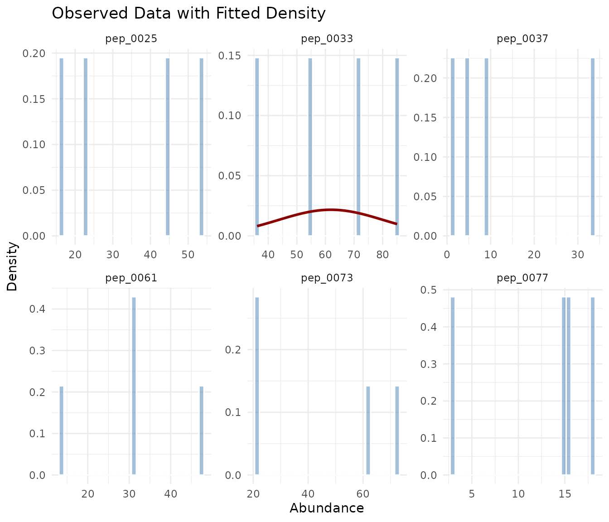
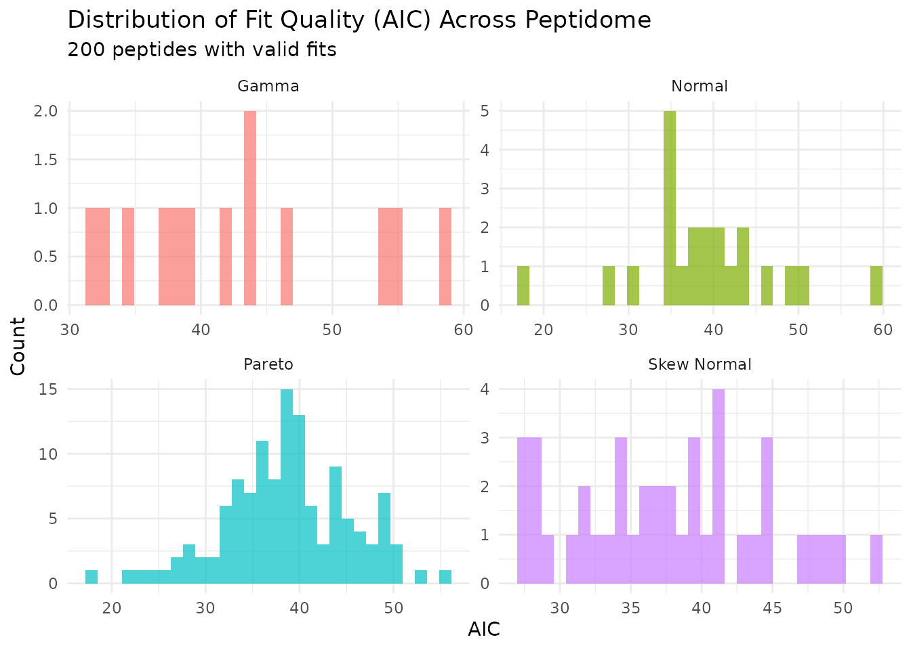
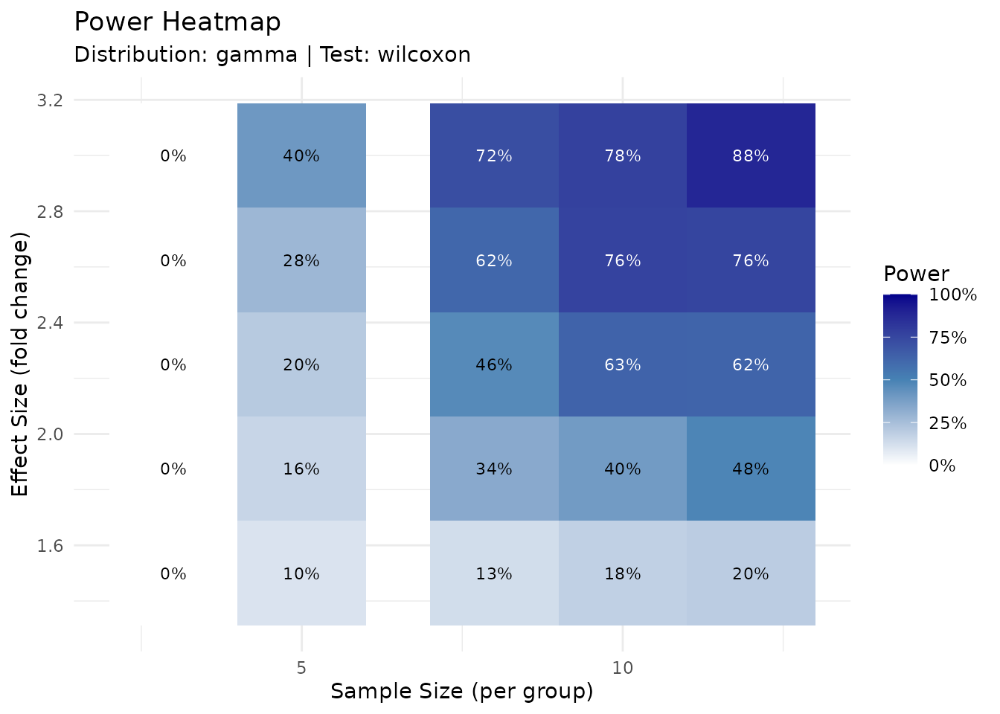
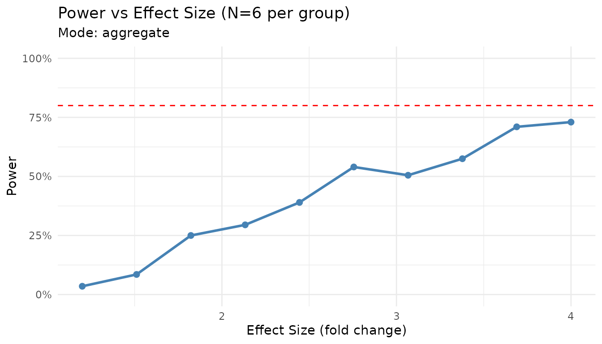
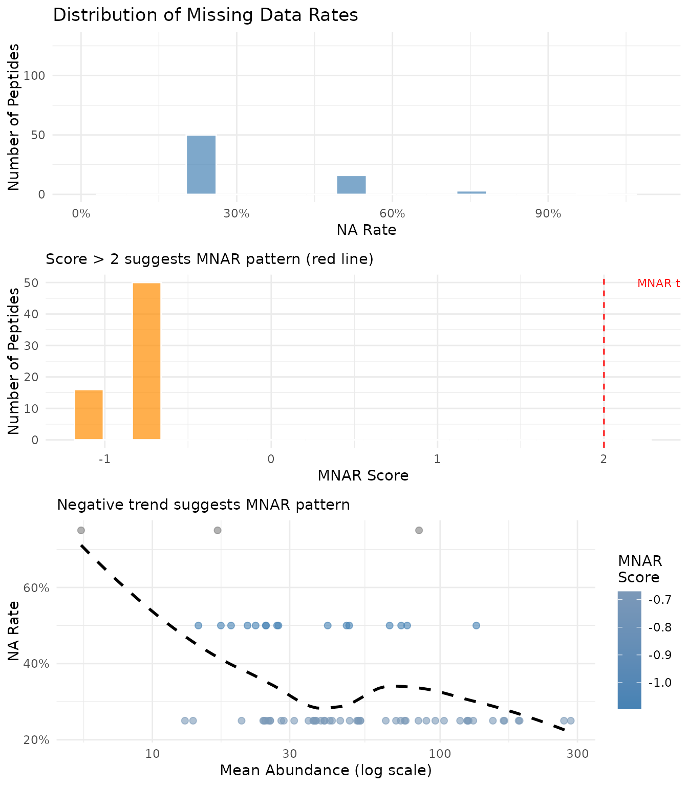

Power Analysis Workflow
Source:vignettes/articles/power-analysis-workflow.Rmd
power-analysis-workflow.RmdIntroduction
peppwR addresses three fundamental power analysis questions:
- Sample size: “What sample size do I need to achieve target power?”
- Power: “What power do I have at a given sample size?”
- Effect size: “What’s the minimum detectable effect at given power and sample size?”
The package offers two modes of analysis:
| Mode | Input | Use Case |
|---|---|---|
| Aggregate | Distribution + parameters | No pilot data; quick estimates |
| Per-peptide | Pilot data via peppwr_fits
|
Realistic, peptide-specific estimates |
Aggregate Mode Deep Dive
When to Use Aggregate Mode
- Planning a new experiment without pilot data
- Quick ballpark estimates needed
- Comparing different experimental scenarios
- Teaching or demonstration purposes
Choosing Distribution Parameters
For phosphoproteomics, gamma distributions are common. Typical parameters:
| Scenario | Shape | Rate | Mean Abundance |
|---|---|---|---|
| Low abundance | 1.5-2 | 0.05-0.1 | 15-40 |
| Medium abundance | 2-3 | 0.02-0.05 | 40-150 |
| High abundance | 3-5 | 0.01-0.02 | 150-500 |
Conservative estimates use lower shape (more skewed, higher variance), while optimistic estimates use higher shape (more symmetric, lower variance).
Finding Sample Size
“How many samples per group do I need for 80% power to detect a 2-fold change?”
set.seed(123)
result <- power_analysis(
distribution = "gamma",
params = list(shape = 2, rate = 0.05),
effect_size = 2,
target_power = 0.8,
find = "sample_size",
n_sim = 1000
)
print(result)
#> peppwr_power analysis
#> ---------------------
#> Mode: aggregate
#>
#> Recommended sample size: N=25 per group
#> Target power: 80%
#> Effect size: 2.00-fold
#>
#> Significance level: 0.05
#> Statistical test: wilcoxon
plot(result)
The power curve shows how power increases with sample size. The recommended N is the smallest value achieving your target.
Finding Power
“With N=6 per group, what’s my power to detect a 2-fold change?”
set.seed(123)
result <- power_analysis(
distribution = "gamma",
params = list(shape = 2, rate = 0.05),
effect_size = 2,
n_per_group = 6,
find = "power",
n_sim = 1000
)
print(result)
#> peppwr_power analysis
#> ---------------------
#> Mode: aggregate
#>
#> Power: 24%
#> Sample size: 6 per group
#> Effect size: 2.00-fold
#>
#> Significance level: 0.05
#> Statistical test: wilcoxonFinding Minimum Detectable Effect
“With N=6 and 80% target power, what’s the smallest effect I can reliably detect?”
set.seed(123)
result <- power_analysis(
distribution = "gamma",
params = list(shape = 2, rate = 0.05),
n_per_group = 6,
target_power = 0.8,
find = "effect_size",
n_sim = 1000
)
print(result)
#> peppwr_power analysis
#> ---------------------
#> Mode: aggregate
#>
#> Minimum detectable effect: 5.00-fold
#> Sample size: 6 per group
#> Target power: 80%
#>
#> Significance level: 0.05
#> Statistical test: wilcoxon
plot(result)
Sensitivity to Parameter Choices
Let’s see how results change with different distribution assumptions:
set.seed(123)
# Conservative (high variance)
conservative <- power_analysis(
"gamma",
params = list(shape = 1.5, rate = 0.05),
effect_size = 2,
target_power = 0.8,
find = "sample_size",
n_sim = 500
)
# Moderate
moderate <- power_analysis(
"gamma",
params = list(shape = 2.5, rate = 0.05),
effect_size = 2,
target_power = 0.8,
find = "sample_size",
n_sim = 500
)
# Optimistic (low variance)
optimistic <- power_analysis(
"gamma",
params = list(shape = 4, rate = 0.05),
effect_size = 2,
target_power = 0.8,
find = "sample_size",
n_sim = 500
)
cat("Conservative (shape=1.5): N =", conservative$answer, "per group\n")
#> Conservative (shape=1.5): N = 30 per group
cat("Moderate (shape=2.5): N =", moderate$answer, "per group\n")
#> Moderate (shape=2.5): N = 20 per group
cat("Optimistic (shape=4): N =", optimistic$answer, "per group\n")
#> Optimistic (shape=4): N = 12 per groupWhen unsure, use conservative estimates to avoid underpowered experiments.
Per-Peptide Mode Deep Dive
When to Use Per-Peptide Mode
- You have pilot data from similar experiments
- Peptide heterogeneity is expected
- You want realistic power estimates across your peptidome
- Planning follow-up studies
Step 1: Distribution Fitting
First, fit distributions to your pilot data:
set.seed(42)
# Generate heterogeneous pilot data
n_peptides <- 100
n_per_group <- 4
peptide_params <- tibble::tibble(
peptide_id = paste0("pep_", sprintf("%04d", 1:n_peptides)),
shape = runif(n_peptides, 1.5, 5),
rate = runif(n_peptides, 0.01, 0.1)
)
pilot_data <- peptide_params |>
dplyr::rowwise() |>
dplyr::mutate(
data = list(tibble::tibble(
condition = rep(c("control", "treatment"), each = n_per_group),
replicate = rep(1:n_per_group, 2),
abundance = rgamma(n_per_group * 2, shape = shape, rate = rate)
))
) |>
dplyr::ungroup() |>
dplyr::select(peptide_id, data) |>
tidyr::unnest(data)We use distributions = "continuous" for abundance data.
Use "counts" if you have count-based quantification (e.g.,
spectral counts).
fits <- fit_distributions(
pilot_data,
id = "peptide_id",
group = "condition",
value = "abundance",
distributions = "continuous"
)
#> Loading required namespace: intervals
print(fits)
#> peppwr_fits object
#> ------------------
#> 200 peptides fitted
#>
#> Best fit distribution counts:
#> Gamma: 13
#> Normal: 22
#> Pareto: 124
#> Skew Normal: 41Note on distribution detection: With n=4 per group (8 observations total), distribution selection has uncertainty. You may see distributions like Pareto or Skew Normal selected even when the true underlying distribution is Gamma. This is normal - the fitted parameters are still useful for power simulation. With larger samples (n≥15 per group), the correct distribution family is more reliably identified.
Understanding Fit Results
The print output shows: - Total peptides fitted - Distribution of best-fit models - Any fit failures
summary(fits)
#> Summary of peppwr_fits
#> ======================
#>
#> Peptides fitted: 200
#> Failed fits: 0 (0.0%)
#>
#> Best distribution counts:
#> Gamma: 13
#> Normal: 22
#> Pareto: 124
#> Skew Normal: 41
#>
#> Fit statistics:
#> AIC range: [17.6, Inf]
#> AIC median: 40.5
#> LogLik range: [-Inf, -5.9]
#> LogLik median: -18.1The summary provides detailed statistics including AIC ranges and median values.
Step 2: Per-Peptide Power Analysis
Now use the fits for power analysis:
set.seed(123)
result_pp <- power_analysis(
fits,
effect_size = 2,
n_per_group = 6,
find = "power",
n_sim = 500
)
print(result_pp)
#> peppwr_power analysis
#> ---------------------
#> Mode: per_peptide
#>
#> Power: 55%
#> Sample size: 6 per group
#> Effect size: 2.00-fold
#>
#> Significance level: 0.05
#> Statistical test: wilcoxon
plot(result_pp)
The histogram shows the distribution of power across peptides. Note that power varies substantially - some peptides achieve near 100% power while others remain underpowered.
Finding Sample Size (Per-Peptide)
“What sample size gives 80% power for most peptides?”
set.seed(123)
result_n <- power_analysis(
fits,
effect_size = 2,
target_power = 0.8,
find = "sample_size",
n_sim = 500
)
print(result_n)
#> peppwr_power analysis
#> ---------------------
#> Mode: per_peptide
#>
#> Recommended sample size: N=12 per group
#> Target power: 80%
#> Effect size: 2.00-fold
#>
#> Significance level: 0.05
#> Statistical test: wilcoxon
plot(result_n)
This “peptide threshold curve” shows what proportion of peptides achieve target power at each sample size. The 50% line indicates where the majority of peptides become well-powered.
Interpreting Per-Peptide Results
Key insights from per-peptide analysis:
- Heterogeneity: Power varies across peptides due to different underlying distributions
- Majority rule: The recommended N aims to power the majority (50%+) of peptides
- Underpowered fraction: Some peptides may never achieve target power at practical sample sizes
Comparing the Two Modes
Let’s run both modes on the same data:
set.seed(123)
# Aggregate mode with "typical" parameters
agg_result <- power_analysis(
"gamma",
params = list(shape = 2.5, rate = 0.05),
effect_size = 2,
target_power = 0.8,
find = "sample_size",
n_sim = 500
)
# Per-peptide mode
pp_result <- power_analysis(
fits,
effect_size = 2,
target_power = 0.8,
find = "sample_size",
n_sim = 500
)
cat("Aggregate mode: N =", agg_result$answer, "per group\n")
#> Aggregate mode: N = 20 per group
cat("Per-peptide mode: N =", pp_result$answer, "per group\n")
#> Per-peptide mode: N = 12 per groupStatistical Test Options
peppwR supports multiple statistical tests:
| Test | ID | Best For |
|---|---|---|
| Wilcoxon rank-sum | "wilcoxon" |
General purpose, robust to non-normality |
| Bootstrap-t | "bootstrap_t" |
Non-normal data, small samples |
| Bayes factor | "bayes_t" |
Evidence quantification |
| Rank products | "rankprod" |
Omics data, designed for small samples |
Default: Wilcoxon Test
The Wilcoxon rank-sum test is the default because it: - Makes no distributional assumptions - Is robust to outliers - Works well with small samples typical of proteomics
set.seed(123)
result_wilcox <- power_analysis(
"gamma",
params = list(shape = 2, rate = 0.05),
effect_size = 2,
n_per_group = 6,
find = "power",
test = "wilcoxon",
n_sim = 500
)
print(result_wilcox)
#> peppwr_power analysis
#> ---------------------
#> Mode: aggregate
#>
#> Power: 24%
#> Sample size: 6 per group
#> Effect size: 2.00-fold
#>
#> Significance level: 0.05
#> Statistical test: wilcoxonBootstrap-t Test
For small samples with non-normal data:
set.seed(123)
result_boot <- power_analysis(
"gamma",
params = list(shape = 2, rate = 0.05),
effect_size = 2,
n_per_group = 6,
find = "power",
test = "bootstrap_t",
n_sim = 500
)
print(result_boot)
#> peppwr_power analysis
#> ---------------------
#> Mode: aggregate
#>
#> Power: 28%
#> Sample size: 6 per group
#> Effect size: 2.00-fold
#>
#> Significance level: 0.05
#> Statistical test: bootstrap_tBayes Factor Test
The Bayes factor test provides evidence strength rather than a p-value. A result is considered “significant” when BF > 3 (substantial evidence).
set.seed(123)
result_bayes <- power_analysis(
"gamma",
params = list(shape = 2, rate = 0.05),
effect_size = 2,
n_per_group = 6,
find = "power",
test = "bayes_t",
n_sim = 500
)
print(result_bayes)
#> peppwr_power analysis
#> ---------------------
#> Mode: aggregate
#>
#> Power: 58%
#> Sample size: 6 per group
#> Effect size: 2.00-fold
#>
#> Significance level: 0.05
#> Statistical test: bayes_tRank Products Test
Designed specifically for omics experiments:
set.seed(123)
result_rp <- power_analysis(
"gamma",
params = list(shape = 2, rate = 0.05),
effect_size = 2,
n_per_group = 6,
find = "power",
test = "rankprod",
n_sim = 500
)
print(result_rp)
#> peppwr_power analysis
#> ---------------------
#> Mode: aggregate
#>
#> Power: 31%
#> Sample size: 6 per group
#> Effect size: 2.00-fold
#>
#> Significance level: 0.05
#> Statistical test: rankprodDiagnostic Plots
peppwR provides several diagnostic plots to assess fit quality and explore power landscapes.
Assessing Fit Quality
After fitting distributions, verify that the fits are reasonable:
set.seed(42) # For reproducible peptide selection
# Histogram with fitted density overlay
plot_density_overlay(fits, n_overlay = 6)
The density overlay shows the observed histogram (blue) with the fitted distribution curve (red). Good fits show the curve closely following the histogram shape.
# QQ plots for goodness-of-fit
plot_qq(fits, n_plots = 6)In a QQ plot, points should fall along the diagonal line. Systematic deviations indicate poor fit: - S-shaped curve: Distribution has wrong tail behavior - Points above line at right: Heavy right tail in data - Points below line at left: Heavy left tail in data
Distribution of Fit Statistics
# AIC distribution across the peptidome by best-fit distribution
plot_param_distribution(fits)
This shows how AIC values are distributed across peptides, grouped by their best-fitting distribution.
Exploring Power Landscapes
For planning purposes, you can visualize how power varies across sample sizes and effect sizes:
# Power heatmap: sample size vs effect size grid
plot_power_heatmap(
distribution = "gamma",
params = list(shape = 2, rate = 0.05),
n_range = c(3, 12),
effect_range = c(1.5, 3),
n_steps = 5,
n_sim = 200
)
The heatmap provides a quick lookup table for power at different experimental designs.
set.seed(123)
# First create a result to use
result_for_plot <- power_analysis(
"gamma",
params = list(shape = 2, rate = 0.05),
effect_size = 2,
n_per_group = 6,
find = "power",
n_sim = 500
)
# Power sensitivity at fixed sample size
plot_power_vs_effect(result_for_plot, effect_range = c(1.2, 4), n_sim = 200)
Handling Missing Data
Proteomics data often contains missing values, particularly for low-abundance peptides near the detection limit. peppwR tracks and models missingness to provide more realistic power estimates.
Understanding Missingness
The fit_distributions() function automatically computes
missingness statistics for each peptide:
# Fits object includes missingness statistics
print(fits)
#> peppwr_fits object
#> ------------------
#> 200 peptides fitted
#>
#> Best fit distribution counts:
#> Gamma: 13
#> Normal: 22
#> Pareto: 124
#> Skew Normal: 41
# Detailed missingness summary
summary(fits)$missingness
#> $total_missing
#> [1] 0
#>
#> $total_values
#> [1] 800
#>
#> $mean_na_rate
#> [1] 0
#>
#> $median_na_rate
#> [1] 0
#>
#> $max_na_rate
#> [1] 0
#>
#> $n_peptides_with_na
#> [1] 0
#>
#> $mean_mnar_score
#> [1] NaN
#>
#> $n_potential_mnar
#> [1] 0Visualizing Missingness Patterns
# Visualize NA rate and MNAR score distributions
plot_missingness(fits_na)
The plot shows three panels:
- Top: Distribution of NA rates across peptides
- Middle: MNAR score histogram - scores above 2 (red line) suggest systematic missingness
- Bottom: Mean abundance vs NA rate, colored by MNAR score. A negative trend (low abundance → high NA rate) is the hallmark of MNAR in proteomics
MNAR Detection
MNAR (Missing Not At Random) occurs when the probability of a value being missing depends on the value itself. In proteomics, this typically happens when low-abundance peptides fall below the detection limit.
peppwR detects MNAR patterns by comparing the mean rank of observed values to what would be expected under random (MCAR) missingness. A positive MNAR score indicates that observed values tend to be higher than expected - suggesting low values are preferentially missing.
To identify specific peptides showing MNAR evidence:
# Get peptides with MNAR score > 2
mnar_peptides <- get_mnar_peptides(fits_na, threshold = 2)
nrow(mnar_peptides)
#> [1] 0
# View top MNAR candidates (if any)
head(mnar_peptides)
#> # A tibble: 0 × 5
#> # ℹ 5 variables: peptide_id <chr>, condition <chr>, na_rate <dbl>,
#> # mnar_score <dbl>, mean_abundance <dbl>Incorporating Missingness into Simulations
For more realistic power estimates, you can incorporate peptide-specific NA rates:
set.seed(123)
# Power analysis accounting for expected NA rates
result_na <- power_analysis(
fits_na,
effect_size = 2,
n_per_group = 6,
find = "power",
n_sim = 500,
include_missingness = TRUE
)
print(result_na)
#> peppwr_power analysis
#> ---------------------
#> Mode: per_peptide
#>
#> Power: 51%
#> Sample size: 6 per group
#> Effect size: 2.00-fold
#>
#> Significance level: 0.05
#> Statistical test: wilcoxonWhen include_missingness = TRUE, simulations incorporate
each peptide’s observed NA rate and MNAR pattern, providing power
estimates that reflect what you’d actually observe in your
experiment.
FDR-Aware Power Analysis
Standard power analysis computes per-peptide power at nominal alpha (e.g., 0.05). However, with thousands of peptides, you’ll apply multiple testing correction - which affects your effective power.
The Multiple Testing Problem
When testing thousands of peptides: - At α = 0.05, you expect 50 false positives per 1000 true nulls - FDR correction (e.g., Benjamini-Hochberg) controls false discovery rate - This makes it harder to detect true effects
Running FDR-Adjusted Analysis
set.seed(123)
result_fdr <- power_analysis(
fits,
effect_size = 2,
n_per_group = 6,
find = "power",
apply_fdr = TRUE,
prop_null = 0.9, # 90% of peptides are true nulls
fdr_threshold = 0.05, # Target 5% FDR
n_sim = 200
)
print(result_fdr)
#> peppwr_power analysis
#> ---------------------
#> Mode: per_peptide
#>
#> Power: 5%
#> Sample size: 6 per group
#> Effect size: 2.00-fold
#>
#> Significance level: 0.05
#> Statistical test: wilcoxon
#>
#> FDR-adjusted analysis (Benjamini-Hochberg)
#> Proportion true nulls: 90%
#> FDR threshold: 5%The apply_fdr mode simulates entire experiments with a
mixture of null and alternative peptides, then applies
Benjamini-Hochberg correction before computing power.
Understanding prop_null
The prop_null parameter specifies what proportion of
peptides you expect to have no effect: - prop_null = 0.9:
10% of peptides show differential abundance -
prop_null = 0.95: Only 5% change (more conservative) -
prop_null = 0.8: 20% change (more liberal)
Higher prop_null makes FDR correction more stringent,
reducing power.
FDR vs Uncorrected Power
set.seed(123)
# Uncorrected (per-peptide) power
result_uncorr <- power_analysis(
fits,
effect_size = 2,
n_per_group = 6,
find = "power",
n_sim = 200
)
cat("Uncorrected power: ", round(result_uncorr$answer * 100), "%\n", sep = "")
#> Uncorrected power: 55%
cat("FDR-adjusted power:", round(result_fdr$answer * 100), "%\n", sep = "")
#> FDR-adjusted power:5%FDR-adjusted power is typically lower because BH correction requires stronger evidence to call discoveries. Use FDR mode when you want to know how many true positives you’ll actually detect after correction.
Handling Edge Cases
Fit Failures
When distributions fail to fit some peptides, you have three options:
set.seed(123)
# Option 1: Exclude failed fits (default)
result_exclude <- power_analysis(fits, effect_size = 2, n_per_group = 6,
find = "power", on_fit_failure = "exclude", n_sim = 200)
# Option 2: Use lognormal fallback
result_lognorm <- power_analysis(fits, effect_size = 2, n_per_group = 6,
find = "power", on_fit_failure = "lognormal", n_sim = 200)
# Option 3: Bootstrap from empirical data
result_empirical <- power_analysis(fits, effect_size = 2, n_per_group = 6,
find = "power", on_fit_failure = "empirical", n_sim = 200)
cat("Exclude failures: ", round(result_exclude$answer * 100), "% power\n", sep = "")
#> Exclude failures: 55% power
cat("Lognormal fallback: ", round(result_lognorm$answer * 100), "% power\n", sep = "")
#> Lognormal fallback: 55% power
cat("Empirical bootstrap: ", round(result_empirical$answer * 100), "% power\n", sep = "")
#> Empirical bootstrap: 55% powerRecommendations: - Start with "exclude"
to see how many peptides fail - Use "lognormal" when fit
failures are common but you have enough data points - Use
"empirical" when you want purely data-driven simulation
without distribution assumptions
Very Small Pilot Datasets
With <3 replicates per group: - Distribution fitting may be unreliable - Consider aggregate mode with conservative parameters - Increase n_sim for more stable estimates
Extreme Effect Sizes
Very large effects (>5-fold) typically achieve high power with minimal samples. Very small effects (<1.2-fold) may require impractically large samples.
set.seed(123)
# Large effect
large <- power_analysis(
"gamma",
params = list(shape = 2, rate = 0.05),
effect_size = 5,
target_power = 0.8,
find = "sample_size",
n_sim = 500
)
# Small effect
small <- power_analysis(
"gamma",
params = list(shape = 2, rate = 0.05),
effect_size = 1.2,
target_power = 0.8,
find = "sample_size",
n_sim = 500
)
cat("5-fold change: N =", large$answer, "per group\n")
#> 5-fold change: N = 6 per group
cat("1.2-fold change: N =", small$answer, "per group\n")
#> 1.2-fold change: N = 50 per groupSummary
- Start with aggregate mode for quick estimates and planning
- Use per-peptide mode when pilot data is available for accurate estimates
- Consider heterogeneity - not all peptides behave the same
- Choose appropriate tests - Wilcoxon is a safe default
- Be conservative - underpowered experiments waste resources
Next Steps
-
Getting Started: See
vignette("getting-started")for a minimal workflow -
Benchmarking: See
vignette("benchmarking")for performance with large datasets